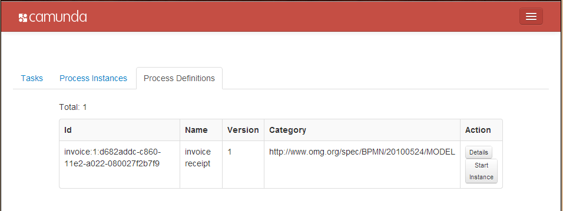
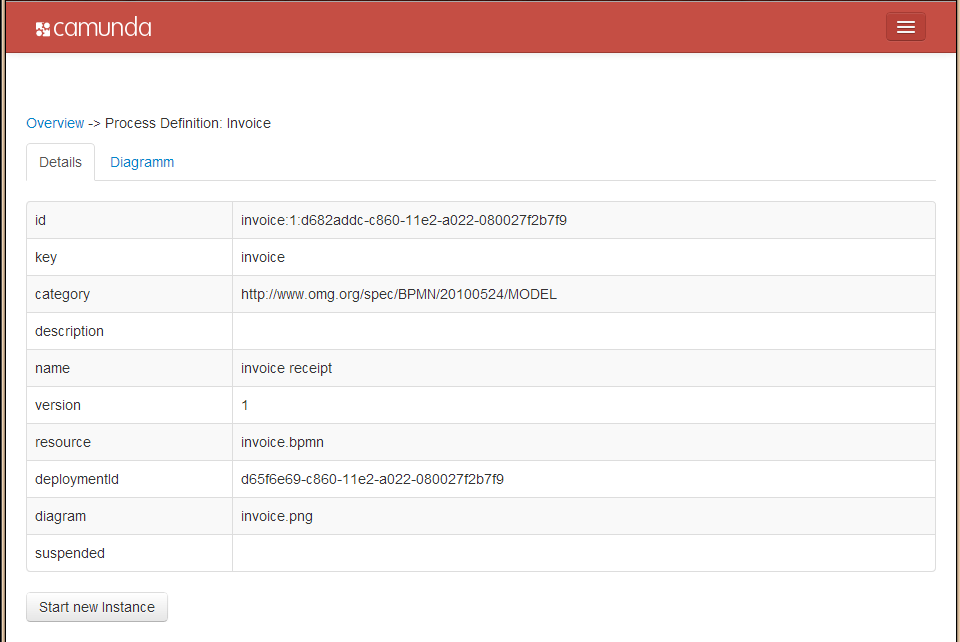

Introduction
The Camunda BPM PHP SDK enables PHP developers to easily integrate the camunda BPM process solutions into their projects.
Getting Started
Installation
The fastest way to get started with the SDK is to add the package from packagist via composer.
to initialize the package you could then use the composer autoload.php (see composer doc for the how to instructions).
Using the sdk
After the inclusion you can instantiate the API and use it to get your requested data. Below is a simple example which shows how to use the API. If you want to know more about the API you can have a look into the sdk's API-Documentation.
Example:
In this example we will request all process definitions and output the deployment id of each definition.
Code:
$camundaAPI = new \org\camunda\php\sdk\Api('http://localhost:8080/engine-rest');
$processDefinitionRequest = new \org\camunda\php\sdk\entity\request\ProcessDefinitionRequest();
$processDefinitions = $camundaAPI->processDefinition->getDefinitions($processDefinitionRequest);
foreach($processDefinitions AS $data) {
echo 'Process deployment id: ' . $data->getDeploymentId() . '<br />';
}
Explanation:
Instantiate the rest client (this example uses our prepackaged tomcat release in a local installation):
$camundaAPI = new \org\camunda\php\sdk\Api('http://localhost:8080/engine-rest');
Get all process definitions:
$processDefinitionRequest = new \org\camunda\php\sdk\entity\request\ProcessDefinitionRequest();
$processDefinitions = $camundaAPI->$processDefinition->getDefinitions($processDefinitionRequest);
output the deployment id for each process definition:
foreach($processDefinitions AS $data) {
echo 'Process Deployment ID: ' . . $data->deploymentId . '<br />';
}
"It is nice to see some code but what can we do with this?" ... I think this is one of the most essential questions about this API. Lets say we do some html magic and create an web application. It could be an application like this:
Now as you can see we have some output but you can also do a step more and show some details :-)

To be true - pictures a nice but why don't touch the whole:
Click Here
Be Aware Your data will be deleted after 1 hour!
Architecture Overview
The project will provide a client library which authenticates against the REST Api and provide PHP developers with a native API for interacting with the process engine:

While the camunda BPM project stays focused on Java as primary programming language, we believe that it is important to support developers that use other programming languages and give them access to the BPMN 2.0 process engine technology